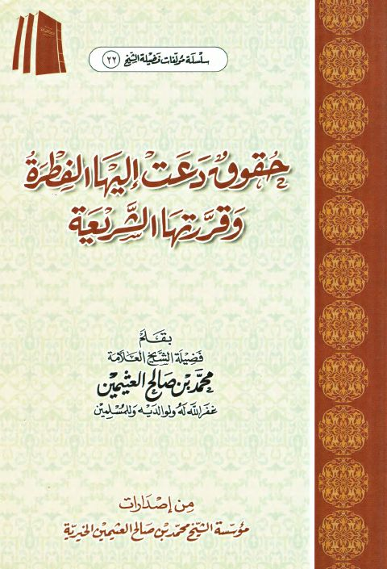

حقوق دعت إليها الفطرة وقررتها الشريعة
Authors: محمد بن صالح العثيمين
Publishers: مؤسسة الشيخ محمد بن صالح العثيمين الخيرية
Download Downloads need an internet connection.
- Published
- 1434هـ 2013م
- Country
- القصيم، السعودية
- Edition
- 3
- Volumes
- 1
- Pages
- 48
- Type
- كتاب
- Category
- الفقه وأصوله
Description
▫️ العنوان: حقوق دعت إليها الفطرة وقررتها الشريعة ▪️ المؤلف: #محمد_بن_صالح_العثيمين ▫️ الناشر: #مؤسسة_الشيخ_محمد_بن_صالح_العثيمين_الخيرية ▪️ تاريخ النشر: 1434هـ 2013م ▫️ بلد النشر: القصيم، #السعودية ▪️ الطبعة: 3 ▫️ عدد الأجزاء: 1 ▪️ الصفحات: 48 ▫️ نوع الوعاء: #كتاب ▪️ التصنيف الرئيسي: #الفقه_وأصوله ۪